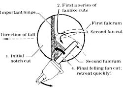

To fell big trees with a diameter exceeding twice the bar length, start by carefully making a plunge-cut into the center of the tree, making sure to press nose of bar into the log until the guide bar is into the wood double its width before making the bor